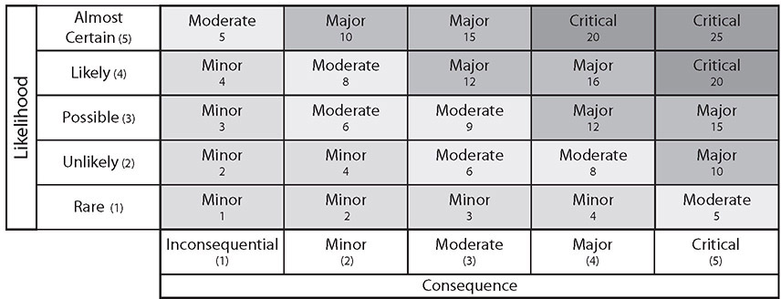

CHAPTER 34
Risk Management
In this chapter, you will
• Explore risk management concepts
• Examine processes used in risk management
Risk management is a core business function of an enterprise because it is through the risk management process that an enterprise can maximize its return on investments. Understanding the business impact of operations associated with the enterprise is key for business success. This can be accomplished using a business impact analysis. Using the data from the analysis, coupled with a threat analysis and a risk assessment process, the enterprise can come to an understanding of the sources of the risk elements it faces and their level of intensity.
Certification Objective This chapter covers CompTIA Security+ exam objective 5.4: Summarize risk management processes and concepts.
Risk Types
Risks can come from a wide range of sources. One way to organize different risks is to categorize them into a series of types. CompTIA Security+ recognizes the following six risk types: external, internal, legacy systems, multiparty, IP theft, and software compliance/licensing. These different types are not exclusive and will be discussed in the following sections.
External
External threats come from outside the organization and, by definition, begin without access to the system. Access is reserved for users who have a business need to know and have authorized accounts on the system. Outsiders must first hijack one of these accounts. This extra step and the reliance on external connections typically make external attackers easier to detect.
Internal
Internal threats include disgruntled employees and well-meaning employees who make mistakes or have an accident. Internal threats tend to be more damaging, as the perpetrator has already been granted some form of access. The risk is related to the level of access and the value of the asset being worked on. For instance, if a system administrator working on the domain controller accidently erases a critical value and crashes the system, it can be just as costly as an unauthorized outsider performing a DoS attack against the enterprise.
Legacy Systems
Legacy systems are older, pre-existing systems. But age really isn’t the issue—the true issue behind what makes a system a legacy system is the concept of technical debt. Technical debt is the cost occurred over time as a result of not maintaining a system completely. Cutting corners for cost can be legitimized in the now, but over time those cuts amount to issues. Take system modification as an example. If a system has had custom modifications over time to adapt it to a company’s business processes, how do those modifications work when a newer version comes out? A common reason for not updating or upgrading a system is that it will break something or void some warranty in place. Over time, this lack of staying current, or drifting away from the desired state, increases costs. Like all debt, there is interest, and technical debt grows over time to where it can become a major issue in IT projects charged with updating older systems. In a world with constantly evolving threats and risk vectors, the inability to respond is a risk in itself.
Multiparty
In traditional risk management, the driving factor under consideration is risk to one’s own enterprise. In a traditional two-party system (an attacker versus a firm), the risk equations are fairly easy to determine and optimize. But when a system has multiple parties, each with its own risk determinations, the management of the overall risk equation gets complicated. If a firm is negotiating to make a major system change, and all the stakeholders are within the firm, then it is still considered a single party, but if the financing for the project is from another firm, and subcontractors are involved, other party determinations of acceptable risk levels become an issue very quickly.
IP Theft
If you ask an IT technician about cybersecurity risk, you might get an answer involving data loss, ransomware, viruses, malware, or fraud. These are mostly technical issues, for this is the world most cybersecurity professionals live in. But ask a CEO the same question, and business items such as intellectual property (IP) theft come up right away. IP theft can seriously damage a company’s future health. If a firm spends a lot of resources developing a product or a market and then is undercut by other parties that don’t have to spend those resources, sales can disappear and future revenue streams can dry up. Unlike physical assets, digital assets can be stolen merely through copying, and this is the pathway attackers use for IP data. The attacker will attempt to gain access and copy the data, all the while trying to leave no trace, making the theft not at all obvious until a competitor uses the information and fields a “stolen” product in the form of a copy.
IP theft is hard to attribute, and once the copy is in the marketplace, the only resort is courts via trade secret and patent protection actions. This is a very significant issue with international state-sponsored attacks, as the legal recourses are challenging to use effectively. Investigation and prosecution of IP theft are major items pursued by the FBI as part of its cybersecurity strategy.
Software Compliance/Licensing
Software is everywhere; it forms the functional backbone of our systems. The source of this software is via licensing and in many cases trust. Copies of many software products can be made and used without licenses, and this creates software compliance/licensing risk. This form of risk is best battled using policies and procedures that prohibit the activity, followed by internal audits that verify compliance with the policies.

EXAM TIP Be able to identify the various risk types—external, internal, legacy systems, multiparty, IP theft, and software compliance/licensing. Know which risk management strategies and processes in the coming sections should be applied to each of the given risk types discussed.
Risk Management Strategies
Risk management can best be described as a decision-making process. Risk management strategies include elements of threat assessment, risk assessment, and security implementation concepts, all positioned within the concept of business management. In the simplest terms, when you manage risk, you determine what could happen to your business, you assess the impact if it were to happen, and you decide what you could do to control that impact as much as you or your management team deems necessary. You then decide to act or not to act, and, finally, you evaluate the results of your decision. The process may be iterative, as industry best practices clearly indicate that an important aspect of effectively managing risk is to consider it an ongoing process.
Risks are absolutes—they cannot be removed or eliminated. You can take actions to change the effects that a risk poses to a system, but the risk itself doesn’t really change, no matter what actions you take to mitigate that risk. A high risk will always be a high risk. However, you can take actions to reduce the impact of that risk if it occurs. A limited number of strategies can be used to manage risk. The risk can be avoided, transferred, mitigated, or accepted.
Understand that risk cannot be completely eliminated. A risk that remains after implementing controls is termed a residual risk. You have to further evaluate residual risks to identify where additional controls are required to reduce risk even more. This reinforces the statement earlier in the chapter that the risk management process is iterative.
EXAM TIP You can do four things to respond to risk: accept it, transfer it, avoid it, and mitigate it. Understand the differences, as these will all be presented as possible answer choices for a question, and the scenario details will apply to one better than the others.
Acceptance
When you’re analyzing a specific risk, after weighing the cost to avoid, transfer, or mitigate a risk against the probability of its occurrence and its potential impact, the best response is to accept the risk. For example, a manager may choose to allow a programmer to make “emergency” changes to a production system (in violation of good separation of duties) because the system cannot go down during a given period of time. The manager accepts that the risk that the programmer could possibly make unauthorized changes is outweighed by the high-availability requirement of that system. However, there should always be some additional controls, such as a management review or a standardized approval process, to ensure the assumed risk is adequately managed.
Avoidance
Avoiding the risk can be accomplished in many ways. Although you can’t remove threats from the environment, you can alter the system’s exposure to the threats. Not deploying a module that increases risk is one manner of risk avoidance.
Transference
Transference of risk is when the risk in a situation is covered by another entity. As mentioned previously in this book surrounding issues such as cloud computing, contracts and legal agreements will denote which parties are assuming which risks. This is defining who has responsibilities and who holds the risk—defining the specific transference up front. The mistake many make is assuming the risk transfers. The only risk transference that occurs across these legal agreements is that defined in the contract.
Another common example of risk transfer is the protection against fraud that consumers have on their credit cards. The risk is transferred to another party, so people can use their cards in confidence. As in the previous discussion, this transference is in the fine print of the credit card agreement.
Cybersecurity Insurance
A common method of transferring risk is to purchase cybersecurity insurance. Insurance allows risk to be transferred to a third party that manages specific types of risk for multiple parties, thus reducing the individual cost.
Mitigation
Risk can also be mitigated through the application of controls that reduce the impact of an attack. Controls can alert operators so that the level of exposure is reduced through process intervention. When an action occurs that is outside the accepted risk profile, a second set of rules can be applied, such as calling the customer for verification before committing a transaction. Controls such as these can act to reduce the risk associated with potential high-risk operations.
Risk Analysis
To effectively manage anything, there must be appropriate measurements to guide the course of actions. In the case of risk, this is also true. To manage risk, there needs to be a measurement of loss, and potential loss, and much of this information comes by way of risk analysis. Risk analysis is performed via a series of specific exercises that reveal presence and level of risk across an enterprise. Then, through further analysis, the information can be refined to a workable plan to manage the risk to an acceptable level.
Risk Register
A risk register is a list of the risks associated with a system. It also can contain additional information associated with the risk element, such as categories to group like risks, probability of occurrence, impact to the organization, mitigation factors, and other data. There is no standardized form. The Project Management Institute has one format, other sources have different formats. The reference document ISO Guide 73:2009 Risk Management—Vocabulary defines a risk register to be a “record of information about identified risks.”
Risk Matrix/Heat Map
A risk matrix or heat map is used to visually display the results of a qualitative risk analysis. This method allows expert judgment and experience to assume a prominent role in the risk assessment process and is easier than trying to exactly define a number for each element of risk. To assess risk qualitatively, you first determine the likelihood of a threat occurring and also the consequence should it occur. You then take the value of each and multiply them together to get the risk value. For a 5-by-5 risk matrix/heat map, as shown in Figure 34-1, you simply use the numbers 1 to 5 for each of the axes, and this yields risk values from 1 to 25. These values can then be classified as minor, moderate, major, or critical.

Figure 34-1 Risk matrix/heat map
Risk Control Assessment
A risk control assessment is a tool used by the Financial Industry Regulatory Authority (FINRA) to assess a series of risks associated with their member institutions. Questions are asked about a wide range of topics, including cybersecurity. Answers to these questions paint a fairly detailed picture of the potential risk exposures a firm has, given its policies and practices.
Risk Control Self-Assessment
Risk control self-assessment is a technique that employs management and staff of all levels to identify and evaluate risks and associated controls. This information is collected and analyzed to produce a more comprehensive map of risks and the controls in place to address it. Engaging multiple viewpoints in the collection of information, identifying risk exposures and determining corrective actions, provides different perspectives and can uncover unnoticed vulnerabilities.
Risk Awareness
Risk awareness is knowledge of risk and consequences. Risk awareness is essential for wide ranges of personnel, with the content tailored to their contributions to the enterprise. For some workers, understanding the risks and defenses against social engineering is important. For others, such as designers of systems, more detailed understanding of risk and the vulnerabilities that cause it are needed. For management and executives, an understanding of the whole risk ecosystem is necessary because they must balance the risk and reward through major system initiatives. Just as the beginning of the famous twelve-step program is acknowledging the problem, becoming aware of risk is important if one is to manage it.
Inherent Risk
Inherent risk is defined as the amount of risk that exists in the absence of controls. This can be confusing, as the definition of “no controls” could include no access controls, no door locks, no personnel background checks—in essence an environment that would equate to everything becoming high risk. A better explanation would be that inherent risk is the current risk level given the existing set of controls rather than the hypothetical notion of an absence of any controls. An example might help. Your car has a lot of controls to enable self-driving, yet there is still risk involved. This is the inherent risk; it is associated with the operation of the system within the environment. And as the environment changes, so can the inherent risk—what is considered safe in terms of speed and environment is different between a sunny day with no traffic, a evening with busy traffic and lots of rain, and nighttime with medium traffic. Each of these situations has different inherent risk and may need specific controls to reduce risk to an acceptable level.
Residual Risk
The presence of risks in a system is an absolute—they cannot be removed or eliminated. As mentioned previously in this chapter, four actions can be taken to respond to risk: accept, transfer, avoid, and mitigate. Whatever risk is not transferred, mitigated, or avoided is referred to as residual risk and, by definition, is accepted. You cannot eliminate residual risk, but you can manage risk to drive residual risk to an acceptable level.
Control Risk
Control risk is a term used to specify risk associated with the chance of a material misstatement in a company’s financial statements. This risk can be manifested in a couple ways: either there isn’t an appropriate set of internal controls to mitigate a particular risk or the internal controls set in place malfunctioned. Business systems that rely on IT systems have an inherent risk associated with cybersecurity risks. What makes these risks become control risks is when they impact the business function in a manner that results in financial misstatements or errors. In the case of an organization that doesn’t have adequate internal controls in place to prevent and detect fraud or errors, it has a specific issue of control risk as opposed to inherent risk.
EXAM TIP Inherent risk is the amount of risk that exists in the absence of controls. Residual risk is the amount of risk that remains after controls are accounted for. Control risk is when the risk specifically affects the financial reporting.
Risk Appetite
Different firms in different businesses and environments have different risk exposures, but they also have different tolerances for risk. Risk appetite is the term used to describe a firm’s tolerance for risk. Even within a sector, with companies of the same size, operating in roughly the same areas, there can be differences in the level of risk each feels comfortable in accepting. This risk appetite is related to other business elements such as reward and loss. Each company’s executive structure needs to determine the appropriate risk appetite for that firm, and that becomes the upper limit on acceptable risk in the company’s operations.
Regulations That Affect Risk Posture
Regulations can have a dramatic effect on risk exposure. Sometimes that effect is a direct action of a regulation, such as financial firms being forced by regulators to have certain levels of encryption to protect certain types of processes. Other times it is less direct, as in specific monitoring required for reporting, and firms change operations to avoid having to report. The breadth of regulations is wide, but some of the common ones associated with cybersecurity include Sarbanes-Oxley, various financial regulations on protecting data, and Payment Card Industry Data Security Standard (PCI-DSS) for credit card data.
Regulations drive corporate responses because failing to follow regulations can result in penalties, which represent a loss. Therefore, regulations can be viewed as risks with almost certainty of incurring the loss.
EXAM TIP It’s important to remember that regulations apply to many areas of cybersecurity. Know that the Sarbanes-Oxley Act of 2002 protects investors from corporate fraud and bad financial reporting, and the Payment Card Industry Data Security Standard (PCI-DSS) is a set of security standards and policies for companies to follow in order to optimize security for consumer payment cards and associated private data.
Risk Assessment Types
A risk assessment is a method to analyze potential risk based on statistical and mathematical models. You can use any one of a variety of models to calculate potential risk assessment values. A common method is the calculation of the annual loss expectancy (ALE). Calculating the ALE creates a monetary value of the impact. This calculation begins by calculating a single-loss expectancy (SLE), which is presented in detail later in the chapter.
Qualitative
Qualitative risk assessment is the process of subjectively determining the impact of an event that affects a project, program, or business. Qualitative risk assessment usually involves the use of expert judgment and models to complete the assessment. This type of risk assessment is highly dependent on expert judgment and experience and can also suffer from biases. The risk matrix/heat map presented earlier is an example of a qualitative risk model.
Quantitative
Quantitative risk assessment is the process of objectively determining the impact of an event that affects a project, program, or business. Quantitative risk assessment usually involves the use of metrics and models to complete the assessment. Quantitative risk assessment applies historical information and trends to attempt to predict future performance. This type of risk assessment is highly dependent on historical data and gathering such data can be difficult. Quantitative risk assessment can also rely heavily on models that provide decision-making information in the form of quantitative metrics, which attempt to measure risk levels across a common scale. The models of single-loss expectancy, annual loss expectancy, and annualized rate of occurrence, discussed later in this chapter, are examples of quantitative risk analysis.
EXAM TIP Understand the difference between quantitative and qualitative risk assessments. Quantitative means you can actually count something, whereas qualitative is more subjective, with values such as high, medium, and low.
Likelihood of Occurrence
The likelihood of occurrence is the chance that a particular risk will occur. This measure can be qualitative or quantitative, as just discussed. For qualitative measures, the likelihood of occurrence is typically defined on an annual basis so that it can be compared to other annualized measures. If defined quantitatively, it is used to create rank-order outcomes.
Impact
The impact of an event is a measure of the actual loss when a threat exploits a vulnerability. Federal Information Processing Standard (FIPS) 199 defines three levels of impact using the terms high, moderate, and low. The impact needs to be defined in terms of the context of each organization, as what is high for some firms may be low for much larger firms. The common method is to define the impact levels in terms of important business criteria. Impacts can be in terms of cost (dollars), performance (service level agreement [SLA] or other requirements), schedule (deliverables), or any other important item. Impact can also be categorized in terms of the information security attribute that is relevant to the problem: confidentiality, integrity, and availability.
Risk is the chance of something not working as planned and causing an adverse impact. Impact is the cost associated with a realized risk. Impact can be in many forms—from human life, as in injury or death, to property loss, to loss of safety, financial loss, or loss of reputation. Losses are seldom absolute and can come in all sizes and combinations. Different levels of risk can result in different levels of impact. Sometimes external events can have an effect on the impact. If everyone in the industry has been experiencing a specific type of loss, and your firm had time and warning to mitigate it, but didn’t, the environment defined by these outside factors may well indeed increase the impact to your firm from this type of event. For instance, failing to patch a system can have serious impacts to an organization, as recent data breaches have shown. But failure to patch a system, when you know it will be used against you, is even worse, as it almost invites further attacks.
Life
Many IT systems are involved in healthcare, and failures of some of these systems can and have resulted in injury and death to patients. IT systems are also frequently integral to the operation of machines in industrial settings, and their failure can have similar impacts. Injury and loss of life are outcomes that backups cannot address and can result in consequences beyond others. As part of a business impact analysis (BIA), you would identify these systems and ensure that they are highly redundant, to avoid impact to life.
Property
Property damage can be the result of unmitigated risk. Property damage to company-owned property, property damage to property of others, and even environmental damage from toxic releases in industrial settings are all examples of damage that can be caused by IT security failures. This can be especially true in companies that have manufacturing plants and other cyber physical processes. If you think property damage can’t happen to your organization because it only has office computers, consider the Shamoon malware that destroyed the computing resources of Saudi Aramco to the point that the company had to buy replacement equipment, as reimaging to a clean state was not a guaranteed, or timely, solution.
Safety
Safety is the condition of being protected from or unlikely to cause danger, risk, or injury. Safety makes sense from both a business risk perspective and when you consider the level of concern one places for the well-being of people. In a manufacturing environment, with moving equipment and machines that can present a danger to workers, government regulations drive specific actions to mitigate risk and make the workplace as safe as possible. Computers are increasingly becoming involved in all aspects of businesses, and they can impact safety. Failures that lead to safety issues will cause work stoppages and increase losses that could otherwise have been avoided. Unsafe conditions that are the result of computer issues will face the same regulatory wrath that unsafe plants have caused in manufacturing—fines and criminal complaints.
Finance
Finance is in many ways the final arbiter of all activities because it is how we keep score. We can measure the gains through sales and profit, and we can measure the losses through unmitigated risks. We can take most events, put a dollar value on them, and settle the books. Where this becomes an issue is when the impacts exceed the expected costs associated with the planned residual risks because then the costs directly impact profit. Impacts to a business ultimately become a financial impact. What starts as a missed patch allows ransomware to infiltrate a system. This results in a business impact that eventually adds costs, which should have been avoided.
Reputation
Corporate reputation is important in marketing. Would you deal with a bank with a shoddy record of accounting or losing personal information? How about online retailing? Would the customer base think twice before entering their credit card information after a data breach? These are not purely hypothetical questions; these events have occurred, and corporate reputations have been damaged as a result, thus costing the firms in customer base and revenue.
EXAM TIP Risk is instantiated as impact. Impacts can have effects on life, property, safety, reputation, and finances. Typically, multiple impacts occur from an incident, and finance always pays the bill. Be prepared to parse a question to determine whether its focus is risk, impact, or a specific consequence.
Asset Value
The asset value (AV) is the amount of money it would take to replace an asset. This term is used with the exposure factor (EF), a measure of how much of an asset is at risk, to determine the single-loss expectancy (SLE).
EXAM TIP Understand the terms SLE, ALE, and ARO and how they are used to calculate a potential loss. You may be given a scenario, asked to calculate the SLE, ALE, or ARO, and presented answer choices that include values that would result from incorrect calculations.
Single-Loss Expectancy (SLE)
The single-loss expectancy (SLE) is the value of a loss expected from a single event. It is calculated using the following formula:
SLE = asset value (AV) × exposure factor (EF)
Exposure factor (EF) is a measure of the magnitude of loss of an asset.
For example, to calculate the exposure factor, assume the asset value of a small office building and its contents is $2 million. Also assume that this building houses the call center for a business, and the complete loss of the center would take away about half of the capability of the company. Therefore, the exposure factor is 50 percent, and the SLE is calculated as follows:
$2 million × 0.5 = $1 million
Annualized Loss Expectancy (ALE)
After the SLE has been calculated, the annual loss expectancy (ALE) is then calculated simply by multiplying the SLE by the likelihood or number of times the event is expected to occur in a year, which is called the annualized rate of occurrence (ARO):
ALE = SLE × ARO
This represents the expected losses over the course of a year based on the ALE. If multiple events are considered, the arithmetic sum of all of the SLEs and AROs can be calculated to provide a summation amount.
Annualized Rate of Occurrence (ARO)
The annualized rate of occurrence (ARO) is a representation of the frequency of the event, measured in a standard year. If the event is expected to occur once in 20 years, then the ARO is 1/20. Typically, the ARO is defined by historical data, either from a company’s own experience or from industry surveys. Continuing our example, assume that a fire at this business’s location is expected to occur about once in 20 years. Given this information, the ALE is
$1 million × 1/20 = $50,000
The ALE determines a threshold for evaluating the cost/benefit ratio of a given countermeasure. Therefore, a countermeasure to protect this business adequately should cost no more than the calculated ALE of $50,000 per year.

NOTE Numerous resources are available to help in calculating ALE. There are databases that contain information to help businesses (member institutions) manage exposure to loss from natural disasters such as hurricanes, earthquakes, and so forth. These databases include information on property perils such as fire, lightning, vandalism, windstorm, hail, and so forth, and even include granular information to help evaluate, for example, the effectiveness of your building’s sprinkler systems.
Disasters
Disasters are major events that cause disruptions. The timescale of the disruption can vary, as can the level of disruption, but the commonality is that the external event that caused the disruption is one that cannot be prevented. Foreseen, yes, but prevented, not necessarily. Common disasters include weather-related events and events that everyone knows will happen eventually, just not where or when. Person-made disasters can be as simple as a misconfiguration that results in the loss of a significant amount of data. By definition, “person-made” indicates the disaster is the result of the action of some person. Foreseeable, yes; preventable, to a degree yes, but even accidents can happen. Having risk management and mitigation strategies in place for disasters is important.
At the time this book was written, the world was gripped by the COVID-19 pandemic. Worldwide, offices, businesses, schools, churches, and various gathering locations went into a lockdown for months. Employees worked from home, if they could, via the Internet. The outcome is still ongoing as of the summer of 2020, but the effect is plain to see—a global pandemic will be one of the largest disasters ever experienced by the current generation and is changing many businesses and business processes.
NOTE Per FEMA, roughly 40 to 60 percent of small businesses never reopen their doors following a disaster. Following a disaster, 90 percent of smaller companies fail within a year unless they can resume operations within five days.
Environmental
One of the largest sources of threats is from the environment. Environmental changes can come from a wide variety of sources—weather, lightning, storms, and even solar flares—and these can cause changes to the system in a manner that disrupts normal operations. These changes can increase risk. While IT security measures cannot change the environmental factors that can impact operations, they can have an effect on the risk associated with the environmental issue. Making systems resilient can reduce impacts and mitigate these sources of risk to the enterprise. And there are times when these effects can be felt at a distance; for instance, how can you back up to a remote site if the remote site is down due to power outage as a result of a fallen branch from a storm?
Person-made
Person-made threats are those that are attributable to the actions of a person. But these threats aren’t limited to hostile actions by an attacker; they include accidents by users and system administrators. Users can represent one of the greatest risks in an IT system. More files are lost by accidental user deletion than by hackers deleting files, and to the team trying to restore the lost files, the attribution has no bearing on the restoration effort. User actions, such as poor cyber hygiene and password reuse, have been shown to be the starting point for many major cybersecurity events over the past several years. A system administrator that improperly configures a backup, the error being discovered when the backup was needed and there is no data on the backup to recover, can easily be a disaster. It is not a result of hostile activity, but destructive nonetheless. Proper controls to manage the risk to a system must include controls against both accidental and purposeful acts.
Internal vs. External
As mentioned previously in the chapter, threats can come from internal and external sources. Internal threats have their origin within an organization, whereas external risks come from the outside. When disasters are examined, they can be seen to have originated either within the company or outside the company. While it is easy to always blame an outside force, in many cases, internal policies and procedures increase a firm’s risk profile for easily understood external risks. If supply chain decisions are made to go with a single overseas vendor for a minor price advantage, with no backup, and then a disaster strikes the country of the supplier, is this an internal or external risk? It can be viewed as both, but an internal policy decision drives the risk of going with a single vendor.
EXAM TIP When performing a threat assessment, be sure to consider environmental, person-made, and internal threats. On the exam, carefully read the scenario preceding the question to differentiate which of these threat sources is the best answer, as multiple sources are common, but one is usually the higher risk.
Business Impact Analysis
Business impact analysis (BIA) is the process used to determine the sources and relative impact values of risk elements in a process. It is also the name often used to describe a document created by addressing the questions associated with sources of risk and the steps taken to mitigate them in the enterprise. The BIA also outlines how the loss of any of your critical functions will impact the organization. This section explores the range of terms and concepts related to conducting a BIA.
Recovery Time Objective (RTO)
The term recovery time objective (RTO) is used to describe the target time that is set for the resumption of operations after an incident. This is a period of time that is defined by the business, based on the needs of the business. A shorter RTO results in higher costs because it requires greater coordination and resources. This term is commonly used in business continuity and disaster recovery operations.
Recovery Point Objective (RPO)
Recovery point objective (RPO), a totally different concept from RTO, is the time period representing the maximum period of acceptable data loss. The RPO defines the frequency of backup operations necessary to prevent unacceptable levels of data loss. A simple example of establishing RPO is to answer the following questions: How much data can you afford to lose? How much rework is tolerable?
NOTE RTO and RPO are seemingly related but in actuality measure different things entirely. The RTO serves the purpose of defining the requirements for business continuity, while the RPO deals with backup frequency. It is possible to have an RTO of 1 day and an RPO of 1 hour, or an RTO of 1 hour and an RPO of 1 day. The determining factors are the needs of the business.
EXAM TIP Know the difference between RTO and RPO. The RTO serves the purpose of defining the requirements for business continuity, while the RPO deals with backup frequency.
Mean Time to Repair (MTTR)
Mean time to repair (MTTR) is a common measure of how long it takes to repair a given failure. This is the average time, and it may or may not include the time needed to obtain parts. The CompTIA Security+ Acronyms list indicates mean time to recover as an alternative meaning for MTTR. In either case, MTTR is calculated as follows:
MTTR = (total downtime) / (number of breakdowns)
Availability is a measure of the amount of time a system performs its intended function. Reliability is a measure of the frequency of system failures. Availability is related to, but different than, reliability and is typically expressed as a percentage of time the system is in its operational state. To calculate availability, both the MTBF and the MTTR are needed:
Availability = MTBF / (MTBF + MTTR)
Assuming a system has an MTBF of 6 months and the repair takes 30 minutes, the availability would be the following:
Availability = 6 months / (6 months + 30 minutes) = 99.9884%
Mean Time Between Failures (MTBF)
Mean time between failures (MTBF) is a common measure of reliability of a system and is an expression of the average time between system failures. The time between failures is measured from the time a system returns to service until the next failure. The MTBF is an arithmetic mean of a set of system failures:
MTBF = ∑ (start of downtime – start of uptime) / number of failures
Mean time to failure (MTTF) is a variation of MTBF, one that is commonly used instead of MTBF when the system is replaced in lieu of being repaired. Other than the semantic difference, the calculations are the same, and the meaning is essentially the same.
EXAM TIP Although MTBF and MTTR may seem similar, they measure different things. Exam questions may ask you to perform simple calculations. Incorrect answer choices will reflect simple mistakes in the ratios, so calculate carefully.
Functional Recovery Plans
Accidents, disasters, and interruptions to business processes happen. This is why we have business continuity plans (BCPs). But what comes next? Functional recovery plans represent the next step—the transition from operations under business continuity back to normal operations. Just as the transition to business continuity operations needs to be planned, so too does the functional recovery plan. While the transition to disaster operations is fast, and planning is based on prioritized assessment of the level of critical importance with respect to continuing operations, the basis for the functional recovery plan is different. The functional recovery plan can be much more organized and staged over time, working to drive consistent efficiencies as opposed to speed. This can be done function by function and is driven by the function needs.
Single Point of Failure
A key principle of security is defense in depth. This layered approach to security is designed to eliminate any specific single point of failure (SPOF). A single point of failure is any system component whose failure or malfunctioning could result in the failure of the entire system. An example of a single point of failure would be a single connection to the Internet—fine for a small business, but not so for a large enterprise with servers providing content to customers. Redundancies have costs, but if the alternative cost is failure, then implementing levels of redundancy is acceptable. For mission-essential systems, single points of failure are items that need to be called to management’s attention, with full explanation of the risk and costs associated with them. In some scenarios, avoiding a single point of failure may not be possible or practical, in which case everyone in the organization with responsibility for risk management should understand the nature of the situation and the resultant risk profile.
Disaster Recovery Plan (DRP)
A disaster recovery plan (DRP) is the plan a firm creates to manage the business impact of a disaster and to recover from its impacts. The details for disaster recovery plans are covered in Chapter 27, “Incident Response Policies and Procedures.”
Mission-Essential Functions
When examining risk and impacts to a business, it is important to identify mission-essential functions from other business functions. In most businesses, the vast majority of daily functions, although important, are not mission essential. Mission-essential functions are those that, should they not occur or be performed properly, will directly affect the mission of the organization. In other terms, mission-essential functions are those that must be restored first after a business impact to enable the organization to restore its operations. The reason that identification of these functions is vital for risk management is simple: you should spend the majority of your effort protecting the functions that are essential. Other functions may need protection, but their impairment will not cause the immediate impact that impairment of a mission-essential function would.
Identification of Critical Systems
A part of identifying mission-essential functions is identifying the systems and data that support the functions. Identification of critical systems enables the security team to properly prioritize defenses to protect the systems and data in a manner commensurate with the associated risk. It also enables the proper sequencing of restoring operations to ensure proper restoration of services.
Site Risk Assessment
Risk assessments can have specific characteristics associated with different sites. This is the basis for a site risk assessment, which is simply a risk assessment tailored for a specific site. In organizations with multiple locations, with differing systems and operations, having tailored risk assessments that are specific to the risks associated with each site provides information for the firm. There may be some elements that overall are specific to the firm, but the development and inclusion of the risks associated with each site provide an actionable document that can be used effectively.
Chapter Review
In this chapter, you became acquainted with examining risk from a business impact analysis (BIA) point of view. The chapter opened with an examination of risk types, including external, internal, legacy systems, multiparty, IP theft, and software compliance/licensing. The next section discussed risk management strategies, where acceptance, avoidance, transference (including cybersecurity insurance), and mitigation were covered.
The subject of risk analysis formed the bulk of the chapter, where the topics were risk registers, risk matrix/heat map, risk control assessment, risk control self-assessment, and risk awareness. The next topics presented were inherent risk, residual risk, control risk, and risk appetite. These were followed by regulations that affect risk posture and risk assessment types, including qualitative and quantitative. The section then moved on to the quantitative calculation of risk using likelihood of occurrence, impact, asset value, single-loss expectancy (SLE), annual loss expectancy (ALE), and annualized rate of occurrence (ARO).
Disasters were covered next, including environmental and person-made, and internal versus external risks were examined.
The chapter wrapped up with an examination of business impact analysis. In this section, the technical topics covered were recovery time objective (RTO), recovery point objective (RPO), mean time to repair (MTTR), and mean time between failures (MTBF). The next items discussed were functional recovery plans, single points of failure, disaster recovery plans (DRPs), mission-essential functions, identification of critical systems, and site risk assessments.
Questions
To help you prepare further for the CompTIA Security+ exam, and to test your level of preparedness, answer the following questions and then check your answers against the correct answers at the end of the chapter.
1. Which of the following is the name often used to describe the process of addressing the questions associated with sources of risk, their impacts, and the steps taken to mitigate them in the enterprise?
A. Risk assessment
B. Business impact analysis
C. Threat assessment
D. Penetration test
2. Which of the following terms is used to describe the target time that is set for the resumption of operations after an incident?
A. RPO
B. MTBF
C. RTO
D. MTTR
3. Which of the following is a common measure of how long it takes to fix a given failure?
A. MTTR
B. RTO
C. RPO
D. MTBF
4. Which of the following is a system component whose failure or malfunctioning could result in the failure of the entire system?
A. Mean time between failures
B. Single point of failure
C. Single-loss expectancy
D. Likelihood of occurrence
5. Which of the following is the process of subjectively determining the impact of an event that affects a project, program, or business?
A. Likelihood of occurrence
B. Functional recovery plan
C. Qualitative risk assessment
D. Quantitative risk assessment
6. Which of the following describe mission-essential functions? (Choose all that apply.)
A. Functions that, if they do not occur, would directly affect the mission of the organization
B. Functions that, if they are not accomplished properly, would directly affect the mission of the organization
C. Functions that are considered essential to the organization
D. The routine business functions
7. Which of the following is the best description of risk?
A. The cost associated with a realized risk
B. The chance of something not working as planned
C. Damage that is the result of unmitigated risk
D. The level of concern one places on the well-being of people
8. Which of the following impacts is in many ways the final arbiter of all activities because it is how we “keep score”?
A. Reputation
B. Safety
C. Finance
D. Life
9. Which of the following is a representation of the frequency of an event, measured in a standard year?
A. Annual loss expectancy (ALE)
B. Annualized rate of occurrence (ARO)
C. Single-loss expectancy (SLE)
D. Annualized expectancy of occurrence (AEO)
10. Which of the following represents a method of transferring risk to a third party?
A. Applying controls that reduce risk impact
B. Creating a record of information about identified risks
C. Developing and forwarding the results of a risk matrix/heat map
D. Purchasing cybersecurity insurance
Answers
1. B. Business impact analysis (BIA) is the name often used to describe a document created by addressing the questions associated with sources of risk and the steps taken to mitigate them in the enterprise. A risk assessment is a method to analyze potential risk based on statistical and mathematical models. A common method is the calculation of the annual loss expectancy (ALE). A threat assessment is a structured analysis of the threats that confront an enterprise. Penetration tests are used by organizations that want a real-world test of their security.
2. C. The term recovery time objective (RTO) is used to describe the target time that is set for the resumption of operations after an incident. Recovery point objective (RPO) represents the maximum time period of acceptable data loss. Mean time between failures (MTBF) is a common measure of reliability of a system and is an expression of the average time between system failures. Mean time to repair (MTTR) is a common measure of how long it takes to repair a given failure.
3. A. Mean time to repair (MTTR) is a common measure of how long it takes to repair a given failure. Recovery time objective (RTO) describes the target time that is set for the resumption of operations after an incident. Recovery point objective (RPO) represents the maximum time period of acceptable data loss. Mean time between failures (MTBF) is a common measure of reliability of a system and is an expression of the average time between system failures.
4. B. A single point of failure is any aspect of a system that, if triggered, could result in the failure of the entire system. Mean time between failures (MTBF) is a common measure of reliability of a system and is an expression of the average time between system failures. Single loss expectancy (SLE) is the expected loss from the occurrence of a risk on an asset. The likelihood of occurrence is the chance that a particular risk will occur.
5. C. Qualitative risk assessment is the process of subjectively determining the impact of an event that affects a project, program, or business. The likelihood of occurrence is the chance that a particular risk will occur. Functional recovery plans represent the transition from operations under business continuity back to normal operations. Quantitative risk assessment is the process of objectively determining the impact of an event that affects a project, program, or business.
6. A, B, and C. Mission-essential functions are those that, should they not occur or be performed properly, will directly affect the mission of the organization. This is where you spend the majority of your effort—protecting the functions that are essential. It is important to separate mission-essential functions from other business functions.
7. B. Risk is the chance of something not working as planned and causing an adverse impact. Impact is the cost associated with a realized risk. Property damage can be the result of unmitigated risk. Safety is when you consider the level of concern one places on the well-being of people.
8. C. Finance is in many ways the final arbiter of all activities because it is how we keep score. The others are important but are not considered the final arbiter.
9. B. The annualized rate of occurrence (ARO) is a representation of the frequency of the event, measured in a standard year. The annual loss expectancy (ALE) is calculated by multiplying the single-loss expectancy (SLE) by the likelihood or number of times the event is expected to occur in a year. The SLE is calculated by multiplying the asset value times the exposure factor. Annualized expectancy of occurrence (AEO) is not a term used in the cybersecurity industry.
10. D. A common method of transferring risk is to purchase cybersecurity insurance. Insurance allows risk to be transferred to a third party that manages specific types of risk for multiple parties, thus reducing the individual costs. Applying controls that reduce risk impact describes risk mitigation. A risk register is “a record of information about identified risks,” as defined by the reference document ISO Guide 73:2009 Risk Management—Vocabulary. A risk matrix/heat map is used to visually display the results of a qualitative risk analysis.